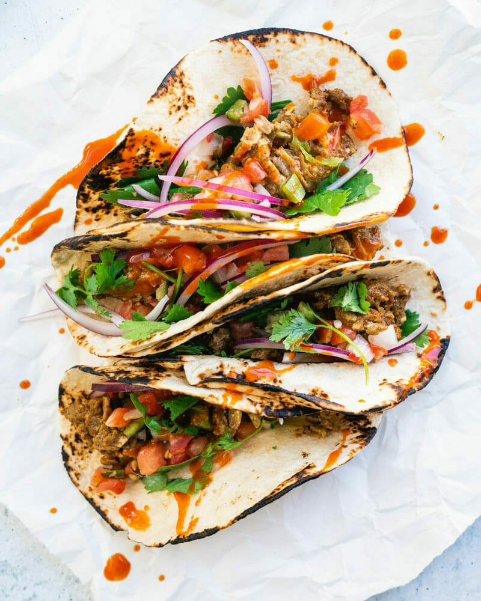

Easy Egg Tacos (in 5 Minutes!)

You won’t believe the flavor in these fast and easy egg tacos! The vegetarian “taco meat” filling works for any meal of the day.
- 4 eggs
- 1/2 tablespoon chili powder
- 1/2 tablespoon garlic powder
- 1/2 tablespoon cumin
- 1/4 teaspoon kosher salt
- 1/2 tablespoon olive oil
- 4 taco-sized flour tortillas or corn tortillas
- Pico de gallo or salsa fresca
- 1 handful thinly sliced red onion
- Torn cilantro leaves
- Hot sauce
- In a medium bowl, whisk together the 4 eggs. Add the chili powder, garlic powder, cumin, and kosher salt, and whisk until combined.
- In a skillet, heat the olive oil. Add the eggs and cook over medium low heat, scraping as the eggs solidify, about 3 to 4 minutes total. As you scrape, they’ll start to form together into a meat-like texture. Don’t scrape too much or you’ll make too small of pieces: just enough for that it comes together!
- If time, warm and char the tortillas by placing them on an open gas flame on medium for a few seconds per side, flipping with tongs, until they are slightly blackened and warm. (See How to Warm Tortillas.)
- Top with salsa fresca (drain extra liquid before serving), thin sliced red onions, torn cilantro leaves, and hot sauce.